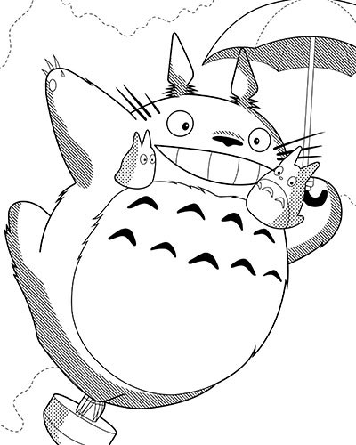

Characters
Totoro
Information
| Name | Totoro |
|---|---|
| Height | 200cm |
| Weight | 170kg |
| Description | Totoro is a giant, friendly forest spirit. He spends most of his time sleeping in a hole in a tree. He doesn't speak, instead communicating by loud bellows that, it seems, only the other Totoros and the Cat Bus can understand. He is very friendly to Mei and Satsuki. He can make trees grow much faster than normal. |